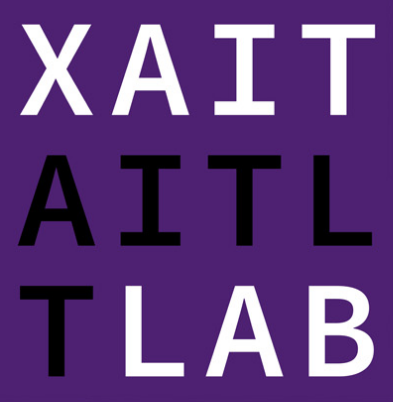
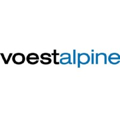

Funding

Dutch national funding agency

Delft AI Labs
TU Delft

I lead a research group on combinatorial optimisation, where we develop algorithms that can be applied to a wide range of real-world problems. Our techniques are based on Satisfiability solving and constraint programming, with some elements of machine learning. Prior to my appointment at TU Delft, I worked as postdoc at the University of Melbourne (2017-2020), received my PhD from the Vienna University of Technology in 2017, and in between these positions held shorter term posts at a production planning and scheduling company MCP (Vienna, Austria) and the National Institute of Informatics (Toyko, Japan).
My long term vision is to automate decision making that is currently done by humans, referring to scenarios where difficult decisions need to be made under complex constraints. This not only results in more efficient decision making and resource utilisation, but also relieves human experts of the burden of handling difficult and stressful tasks, leaving them more time to deal with creative and meaningful problems that have not (yet) been automatised.
Office:
4.E.400, Building 28
Email: e.demirovic@tudelft.nl
Publications: Google Scholar
Research Software Engineer
PhD candidate, optimal decision trees
PhD candidate, constraint programming
PhD candidate, ride-sharing, forecasting
PhD candidate, explainable
combinatorial optimisation
PhD candidate, scheduling for quantum
Postdoc (2022), scheduling
MaxSAT
MaxSAT, now PhD student
Constraint Programming
Scheduling for Quantum Computers
Traffic Predictions
SAT for Multi-Agent Path Finding
Explainable Predictive Maintainance
Automating Puzzle Generation
Graph Theory
(BSc honours) Algorithm Selection
Multi-Agent Path Finding
Reinforcement Learning for Logistics
MaxSAT for Correlation Clustering
MaxSAT
Predictions for Intensive Care
Algorithm Selection